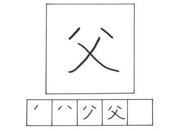
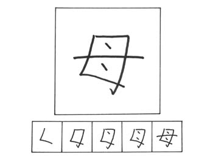
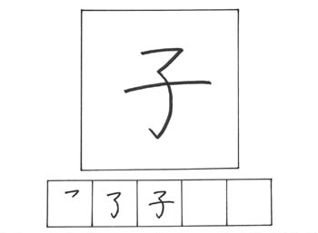

PELAJARAN 8
Pada materi dibawah ini, merupakan materi kanji yang berkaitan dengan dengan anggota keluarga.

CHICHI / ちち
goresan : 4
arti : ayah
kunyomi : chichi,o-tou-san
onyomi : fu
kotoba :
父親 chichioya / ayah
祖父 sofu / kakek
父母 fubo / ayah ibu
神父 shinpu / pendeta

HAHA / はは
goresan : 5
arti : ibu
kunyomi : haha, o-kaa-san
onyomi : bo
kotoba :
母子 boshi /
ibu dan anak
父母 fubo /
ayah dan ibu
お母さん okaasan /
ibu
祖母 sobo / nenek

KO / こ
goresan : 3
arti : anak
kunyomi : ko
onyomi : shi, su
kotoba :
養子 youshi / anak adopsi
帽子 boushi / topi
親子 oyako / orang tua dan anak
息子 musuko / anak laki-laki

ONNA / おんな
goresan : 3
arti : perempuan
kunyomi : onna
onyomi : jo,nyo
kotoba :
彼女 kanojo /
dia(perempuan)
女の子 onna no ko / anak perempuan
女神 megami / dewi
少女 shoujo / gadis